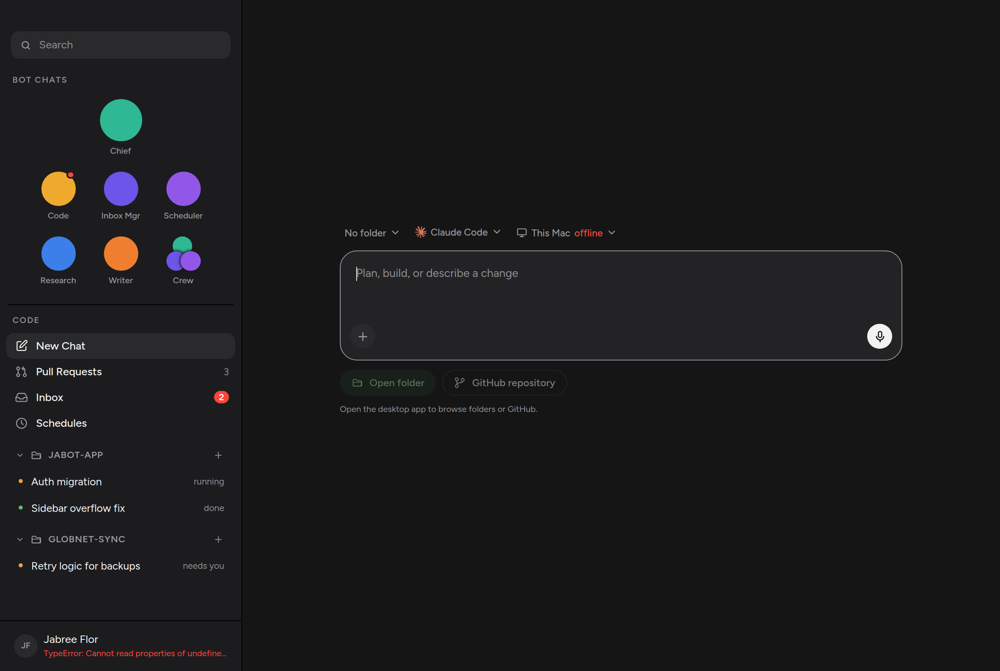
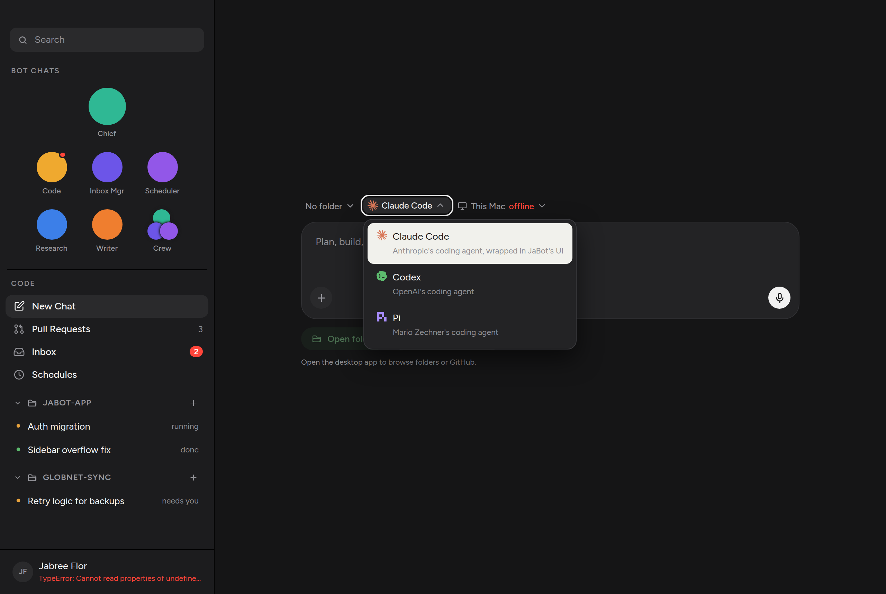
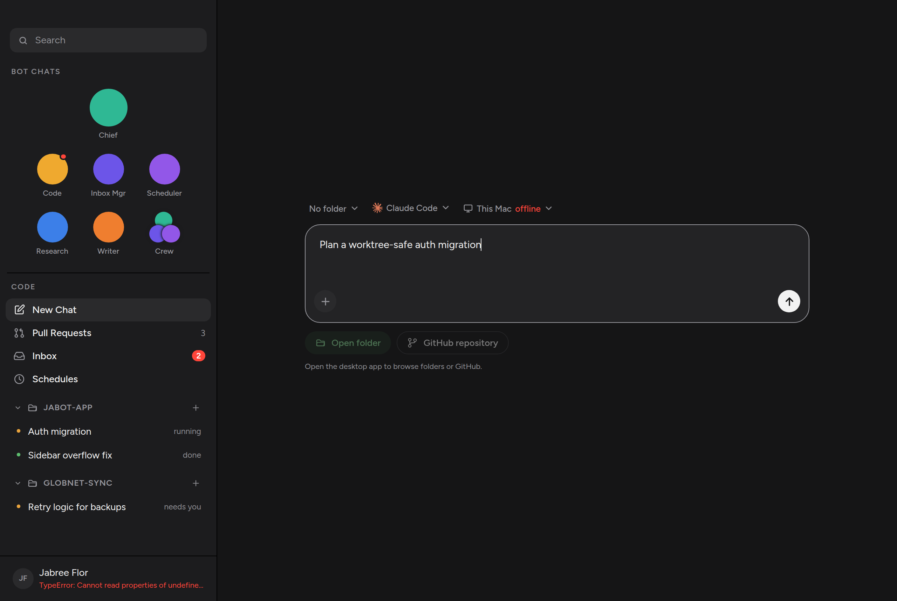
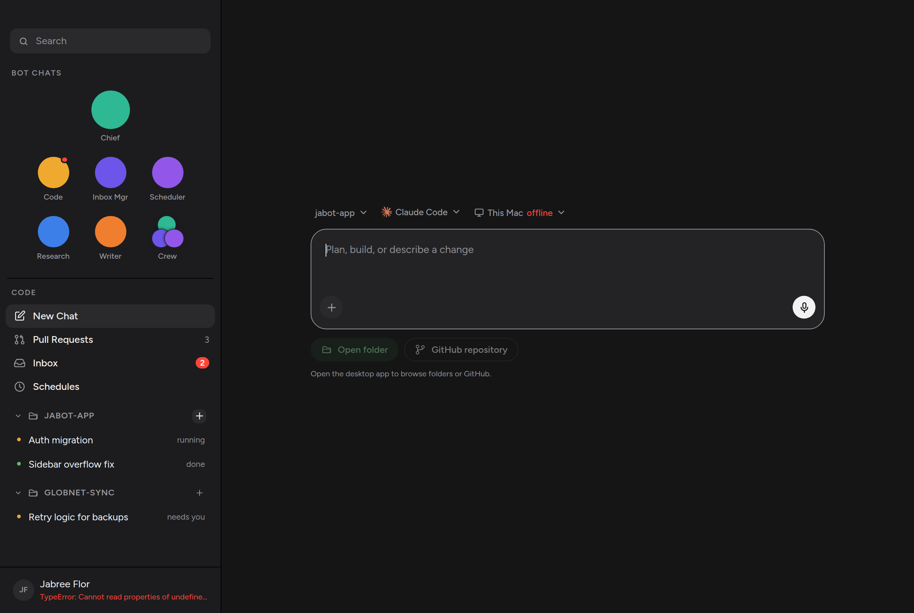

Opening New Chat used to drop a card over whatever you were looking at. The card picked a harness and a folder, then a second screen was the chat. The first message is now typed in the same shape as every message after it.
Context chips sit above a large composer: which folder, which engine, which host. Workspace entry points are pills under the box — Open folder and GitHub repository — not a pair of fat cards. Sending with the box empty still starts an untitled session; anything typed becomes the title and, on a live host, the first prompt.




src/components/NewChatView.tsx — the empty conversation.src/App.tsx — New Chat is a main view, not an overlay.src/styles/chat.css — the composer box and pills.Click New Chat in the sidebar and confirm the main pane is this window, not a modal. Pick a harness from the chip, type a prompt, press Enter. The folder ＋ should land you here with that folder already selected. A spawn the host refuses keeps the draft on this screen.